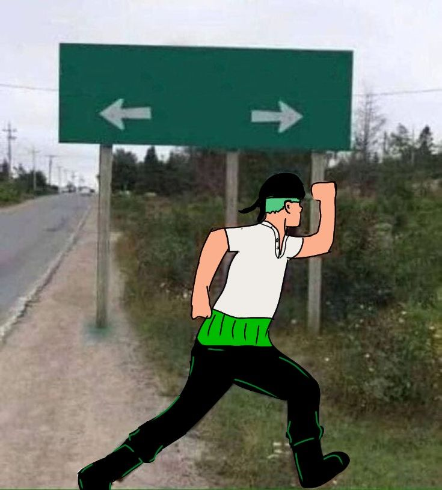
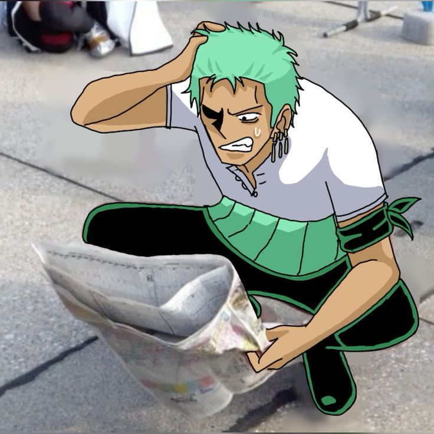

ZORO
ZORO
ZORO
ZORO
Шиперинг, теории, мемы и всё для настоящих фанатов

Две половинки одной души? От вражды до уважения. Они идеально дополняют друг друга. Ташиги — единственная, кто может бросить вызов его принципам.


Тёплые моменты в Вано. Ода намекнул на их связь в SBS. Хёри видит в Зоро самурая, достойного её уважения.
Главный шип аниме. Духовная близость и взаимопонимание без слов. Они понимают боль друг друга и всегда готовы прийти на помощь.
Токсичные, но забавные отношения. Нами бьёт его, но он спасает её в критических ситуациях. Это классика.
Проголосуй за свой любимый шип!
Подтверждено в манге. Связь с легендарным самураем из Вано.
Зоро станет сильнее, чем когда-либо, когда полностью овладеет Энмой.
Тёмная теория, основанная на пророчествах и его клятве.

"Я точно знаю, где мы находимся... кажется..."

"Навигация — моя слабость"

"Я никогда не теряюсь. Я просто нахожу новые пути"